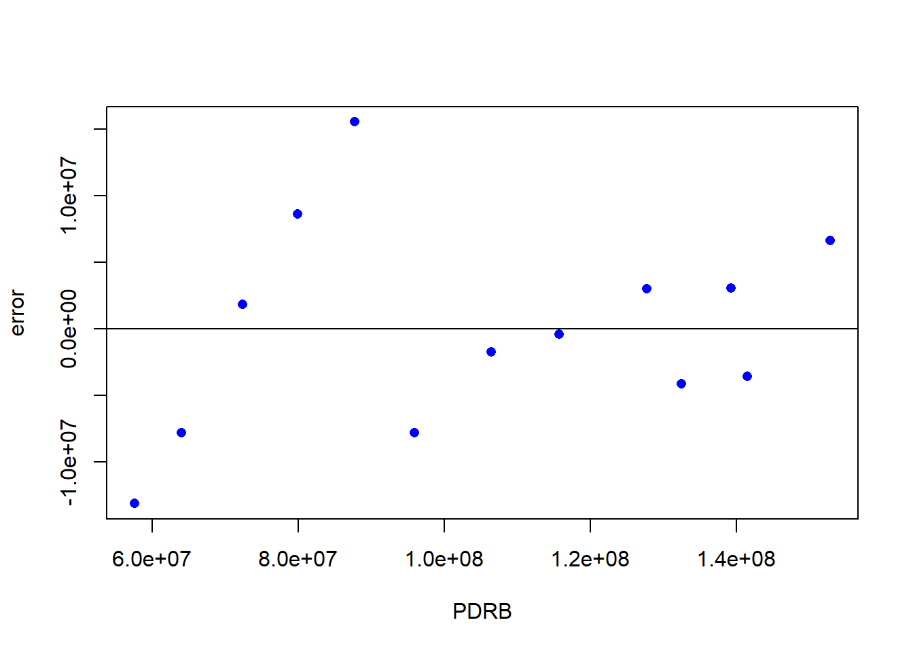
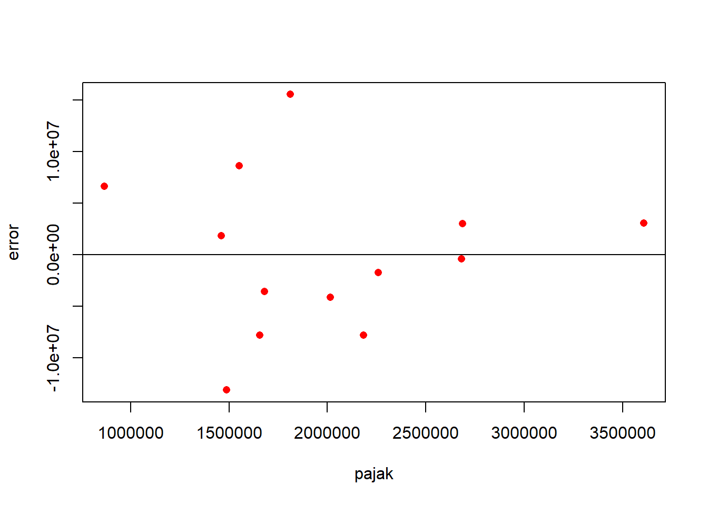

library(tidyverse)
library(readxl)
library(WDI)
library(kableExtra)Pengaruh Pajak dan Cukai Perusahaan Rokok di Kota Kediri Terhadap PDRB Kota Kediri
Metode Penelitian Politeknik APP Jakarta

1 Pendahuluan
1.1 Latar belakang
Keberhasilan Pembangunan suatu wilayah dapat dilihat dari pertumbuhan ekonomi yang positif. Salah satu indikator yang dapat digunakan untuk mengukur pertumbuhan ekonomi suatu wilayah adalah Produk Domestik Regional Bruto (PDRB). Menurut teoriwan ekonomi Jerman abad ke-19 Frederich List, perkembangan ekonomi merupakan suatu gagasan bagaimana suatu wilayah dapat meningkatkan kesejahteraan ekonominya. Membangun ekonomi berkelanjutan memerlukan sebuah strategi yang terstruktur dengan berorientasi pada Pembangunan infrastruktur, pertanian, industri, dan perdagangan. Yang berarti sektor industri dapat mempengaruhi daya saing produk domestik. Maka upaya meningkatkan kesejahteraan ekonomi suatu wilayah dalam sektor industri, kinerja sebuah perusahaan dapat mempengaruhi PDRB suatu wilayah
Pajak merupakan pungutan wajib yang harus dibayarkan kepada pemerintah guna membiayai Pembangunan dan kesejateraan suatu daerah. Sedangkan cukai merupakan pungutan yang dikenakan terhadap barang-barang tertentu dengan berapa karakteristik tertentu pula. Pajak dan cukai yang diterima pemerintah daerah digunakan untuk pembangunan infrastruktur, pendidikan, kesehatan, dan kesejahteraan sosial. Hal ini akan meningkatkan kualitas hidup masyarakat, serta mampu mendorong pertumbuan ekonomi.
Dengan luas wilayah 6.340 ha, kemakmuran Kota Kediri saat ini mencapai peringkat 10 besar di Indonesia, diambil dari data Badan Pusat Statistik (BPS) PDRB Kota Kediri telah mencapai angka Rp118,8 trilliun. Beberapa factor kemungkinan yang dapat diambil dari tingginya PDRB Kota Kediri salah satunya adalah industri rokok yang dominan. Salah satu perusahaan rokok terbesar di dunia berlokasi di Kota Kediri, tidak dapat dipungkiri bahwa pajak dan cukai yang dibayarkan perusaaan tersebut memberikan kontribusi besar teradap perkembangan kota kediri. Maka penelitian ini akan memberikan jawaban terhadap pengaruh perusahaan rokok tersebud terhadap PDRB Kota Kediri.
1.2 Ruang lingkup
Dalam penelitian ini penulis mengumpulkan data dengan menggunakan metode dokumentasi melalui laporan tahunan perusahaan periode Tahun 2010 hingga 2022 per 31 Desember. Selain itu peneliti juga mengumpulkan data melalui Badan Pusat Statistik Kota Kediri. Terdapat tiga variabel (X,S,Y) dalam penelitian ini dimana variabel X sebagai pajak yang dibayarkan perusahaan, variabel Y sebagai PDRB Kota Kediri, dan variabel S sebagai cukai yang dibayarkan perusahaan. Data bersifat time series dalam kurun waktu 2010 hingga 2022, dengan satuan dalam juta rupiah untuk memperpendek penulisan angka.
1.3 Rumusan masalah
Penelitian ini akan menjawab persoalan mengenai:
Apakah pajak dan cukai perusaaan memiliki pengaruh terhadap PDRB Kota Kediri?
Apakah pajak dan cukai berpengaruh besar terhadap PDRB Kota Kediri ?
Bagaimana Hubungan pajak dan cukai terhadap perkembangan PDRB Kota Kediri?
1.4 Tujuan dan manfaat penelitian
Tujuan penelitian ini untuk mengetahui pengaruh pajak dan cukai yang dibayarkan perusahaan rokok di Kediri teradap PDRB Kota Kediri.
Manfaat penelitian:
Bagi pemerintah Untuk mengetahui besarnya kontribusi pajak dan cukai perusahaan rokok terhadap penerimaan negara, dengan mengetahui besarnya kontribusi tersebut pemerintah dapat menentukan kebijakan yang tepat untuk meningkatkan pendapatan negara.
Bagi Masyarakat
Mengetahui dampak positif atau negarif pembayaran pajak dan cukai perusahaan rokok di Kota Kediri terahadap Pembangunan dan keberlangsungan perekonomian Kota Kediri. Maka Masyarakat dapat memahami pentingnya pajak maupun cukai bagi Pembangunan kesejahteraan masyarakat. Dengan memahami tujuan dan manfaat penelitian, diharapkan penelitian ini dapat memberikan kontribusi yang signifikan terhadap pemerintah dan masyarakat terutama wilayah Kota Kediri.
1.5 Package
Sebagai penunjang regresi multivariat dalam penelitian digunakan beberapa packages antara lain:
2 Studi pustaka
Produk Domestik Regional Bruto (PDRB)
Produk Domestik Regional Bruto atau PDRB merupakan jumlah nilai tambah bruto yang ada pada keseluruhan sektor perekonomian di sebuah daerah. Melalui data PDRB kita dapat mengetahui bagaimana keadaan ekonomi, struktur ekonomi, dan pertumbuhan ekonomi yang terjadi di suatu daerah pada jangka waktu tertentu. Ada beberapa pendekatan yang bisa digunakan dalam menghitung PDRB, antara lain pendekatan produksi, pendekatan pengeluaran, dan pendekatan pendapatan. Perhitungan PDRB dengan pendekatan produksi didasarkan pada nilai tambah yang dihasilkan oleh berbagai lapangan kerja atau sektor di suatu daerah. Perhitungan PDRB dengan pendekatan pengeluaran didasarkan pada nilai produk dan jasa yang digunakan sebagai konsumsi akhir oleh rumah tangga, lembaga non-profit, dan pemerintah, ditambah dengan investasi dan ekspor neto. Sedangkan perhitungan PDRB dengan pendekatan pendapatan didasarkan pada jumlah pendapatan yang diterima oleh faktor-faktor produksi yang berproduksi di suatu daerah.
Pajak
Pajak adalah kontribusi wajib dari warga negara atau lembaga hukum kepada negara guna membiayai pengeluaran publik, seperti pembangunan infrastruktur, pendidikan, kesehatan, dan lain sebagainya. Pajak tidak dapat ditolak dan dihindari oleh wajib pajak karena sifatnya yang memaksa. Imbalan dari pembayaran pajak memanglah tidak langsung, melainkan digunakan untuk kepentingan bersama. Beberapa fungsi pajak adalah fungsi anggaran, fungsi pengaturan, fungsi stabilitas, dan fungsi redistribusi.
Cukai
Cukai merupakan pungutan yang diberlakukan oleh negara terhadap barang-barang dengan karakteristik tertentu, seperti konsumsi yang perlu dikendalikan, peredaran yang perlu diawasi, dampak negative bagi masyarakat dan lingkungan, atau kebutuhan pembebanan pungutan negara demi keadilan dan keseimbangan. Beberapa tujuan diberlakukannya cukai adalah mengatur perekonomian, menjaga stabilitas, mengurangi kesenjangan, dan membiayai pengeluaran publik. Alkohol, tembakau, bahan bakar, dan minuman ringan adalah beberapa contoh dari barang kena cukai.
3 Metode penelitian
3.1 Data
| Tahun | Pajak(X) | Cukai(S) | PDRB |
|---|---|---|---|
| 2010 | 1486923 | 1937608 | 57550590 |
| 2011 | 1656869 | 2277343 | 64017688 |
| 2012 | 1461935 | 1842023 | 72303028 |
| 2013 | 1552272 | 2224483 | 79858860 |
| 2014 | 1810552 | 1733886 | 87704151 |
| 2015 | 2182441 | 37681016 | 95865244 |
| 2016 | 2258454 | 42602291 | 106396452 |
| 2017 | 2681165 | 49620618 | 115650217 |
| 2018 | 2686174 | 60081435 | 127716773 |
| 2019 | 3607032 | 68229128 | 139244873 |
| 2020 | 2015404 | 78662740 | 132406061 |
| 2021 | 1681525 | 91099726 | 141467122 |
| 2022 | 866779 | 97593866 | 152791144 |
Penelitian ini menggunakan bentuk data time series dalam kurun waktu tahun 2010 hingga 2022. Serta ditulis dalam satuan Juta Rupia.
setwd("C:/UAS METOPEL/UAS")
DATA <- read_excel("DATA.xlsx")
library(readxl)
reg2<-lm(data=DATA,Y~X+S)
summary(reg2)
Call:
lm(formula = Y ~ X + S, data = DATA)
Residuals:
Min 1Q Median 3Q Max
-13125401 -4131911 -437922 3055022 15521062
Coefficients:
Estimate Std. Error t value Pr(>|t|)
(Intercept) 6.139e+07 7.421e+06 8.272 8.77e-06 ***
X 5.175e+00 3.535e+00 1.464 0.174
S 8.228e-01 6.809e-02 12.084 2.74e-07 ***
---
Signif. codes: 0 '***' 0.001 '**' 0.01 '*' 0.05 '.' 0.1 ' ' 1
Residual standard error: 8415000 on 10 degrees of freedom
Multiple R-squared: 0.9419, Adjusted R-squared: 0.9302
F-statistic: 81 on 2 and 10 DF, p-value: 6.643e-07library(readxl)
DATA$m<-resid(reg2)
plot(DATA$Y,DATA$m,xlab="PDRB",ylab="error",col='BLUE',pch=16)
abline(h=0)
plot pengaruh eror terhadap PDRB
library(readxl)
DATA$m<-resid(reg2)
plot(DATA$X,DATA$m,xlab="pajak",ylab="error",col='red',pch=16)
abline(h=0)
plot pengaruh eror terhadap pajak
3.2 Metode analisis
Dalam penelitian ini, peneliti memilih metode regresi multivariat. Dengan dua variabel independent yakni variabel X(Pajak), dan variabel S(Cukai). Dengan satu variabel dependen yakni PDRB. Penelitian ini dimaksud untuk mencari hubungan antara pajak dan cukai dengan PDRB. Spesifikasi yang dilakukan adalah:
\[ y_{t}=\beta_0 + \beta_1 x_t+\beta_2s+\mu_t \] Dimana \(y_t\) adalah PDRB dan \(x_t\) adalah pajak dan \(s_t\) adalah cukai.
4 Pembahasan
4.1 Pembahasan masalah
Pembahasan masalah Peneliti menggunakan regresi multivariat dan didapatkan hasil data sebagai berikut:
| variable | coefficients |
|---|---|
| Intercept | 6.139e+07 |
| X | 5.175e+00 |
| S | 8.228e-01 |
| Multiple R-squared | 0.9419 |
| Adjusted R-squared | 0.9302 |
| F-statistic | 81 |
| p-value | 6.643e-07 |
Model regresi multivariat dari output di atas adalah:
\[ y_{t}=\ 6.139 + \ 5.175x+\ 0,8228s+\mu_t \]
Maka dapat diketaui bahwa pajak dan cukai keduanya berperan positif dalam meningkatkan PDRB Kota Kediri. Dilihat dari nilai variabel X dan S yang menunjukkan angka positif. Hal ini dapat dikatakan bahwa pajak berbanding lurus dengan cukai, keduanya sama-sama memiliki pengaruh yang signifikan trhadap pertumbuhan PDRB Kota Kediri. Dapat diasumsikan jika nilai pajak naik 1, maka PDRB akan meningkat sebesar 5.175 dan bila diasumsikan nilai cukai naik 1, maka PDRB akan mengalami kenaikan sebesar 0,8228
4.2 Analisis masalah
Hasil regresinya adalah:
library(readxl)
reg2<-lm(data=DATA,Y~X+S)
summary(reg2)
Call:
lm(formula = Y ~ X + S, data = DATA)
Residuals:
Min 1Q Median 3Q Max
-13125401 -4131911 -437922 3055022 15521062
Coefficients:
Estimate Std. Error t value Pr(>|t|)
(Intercept) 6.139e+07 7.421e+06 8.272 8.77e-06 ***
X 5.175e+00 3.535e+00 1.464 0.174
S 8.228e-01 6.809e-02 12.084 2.74e-07 ***
---
Signif. codes: 0 '***' 0.001 '**' 0.01 '*' 0.05 '.' 0.1 ' ' 1
Residual standard error: 8415000 on 10 degrees of freedom
Multiple R-squared: 0.9419, Adjusted R-squared: 0.9302
F-statistic: 81 on 2 and 10 DF, p-value: 6.643e-07Dari hasil diatas dapat dilihat bahwa nilai F-statistic = 81 dengan p-value = 0,0000006643, dengan demikian p-value<alpha yang berarti signifikan. Yang dapat diartikan bahwa ada variabel dependen yang mempengaruhi variabel independent. Selain itu besar variabel independent dalam menjelaskan varian variabel dependen sebesar 94,19%, dapat dilihat dari nilai multiple R-squared sebesar 0.9419 artinya model memiliki daya ramal sebesar 0.9419 atau 94,19%.
5 Kesimpulan
Dalam penelitian ini ditemukan pengaruh signifikan pajak dan cukai yang dibayarkan perusahaan rokok di daerah Kediri teradap pertumbuhan PDRB Kota Kediri. Hal ini dapat dibuktikan dari nilai variabel X dan S yang menunjukkan angka positif. Dimana dapat diasumsikan bahwa, jika nilai pajak naik 1 akan meningkatkan PDRB sebesar 5.175, dan jika diasumsikan nilai cukai naik 1 akan meningkatkan PDRB sebesar 0,8228. Makia dari itu, dapat disimpulkan bahwa pajak dan cukai berperan positif dalam meningkatkan PDRB Kota Kediri.
6 Referensi
Fatmawatie, N. (2019). ANALISIS DAMPAK PP NO.109 TAHUN 2012 TERHADAP KINERJA PT. GUDANG GARAM, TBK DAN SOSIAL EKONOMI KOTA KEDIRI (STUDI KOMPARASI SEBELUM DAN SESUDAH DITERAPKANNYA PP NO. 109 TAHUN 2012). Equilibrium: Jurnal Ekonomi Syariah, 7(1), 129. https://doi.org/10.21043/equilibrium.v7i1.5220
Isnanto, A., Istiqomah, I., & Suharno, S. (2022). Pengaruh PDRB, Kesehatan, Dan Kriminalitas Terhadap Pajak Penghasilan Di Provinsi Jawa Tengah 2015-2019. Jurnal Pajak dan Keuangan Negara (PKN), 4(1S), 299–314. https://doi.org/10.31092/jpkn.v4i1S.1899
Lumy, D. G., Kindangen, P., & Engka, D. S. M. (2019). ANALISIS FAKTOR-FAKTOR YANG MEMPENGARUHI PENERIMAAN PAJAK DAERAH PADA PEMERINTAH PROVINSI SULAWESI UTARA. JURNAL PEMBANGUNAN EKONOMI DAN KEUANGAN DAERAH, 19(6). https://doi.org/10.35794/jpekd.19771.19.6.2018
Nicola, R. N., & Saleh, M. (2023). Pengaruh Produk Domestik Regional Bruto (PDRB), Belanja Modal dan Jumlah Penduduk Terhadap Penerimaan Pajak Daerah di Kabupaten Banjar. JIEP: Jurnal Ilmu Ekonomi dan Pembangunan, 6(2), 995. https://doi.org/10.20527/jiep.v6i2.11080
Susila, M. R., & Pradhani, F. A. (2022). ANALISIS PENGARUH PDRB PER KAPITA DAN JUMLAH TENAGA KERJA TERHADAP JUMLAH PENDAPATAN PAJAK DAERAH PROVINSI DI INDONESIA. Jurnal Ilmiah Akuntansi dan Keuangan (JIAKu), 1(1), 72–87. https://doi.org/10.24034/jiaku.v1i1.4996